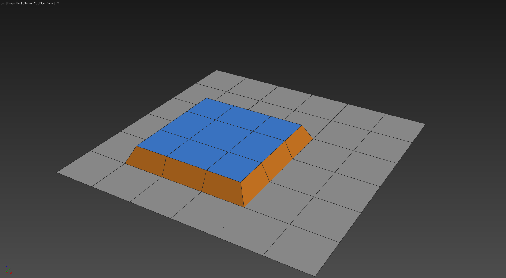
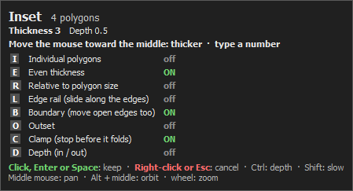
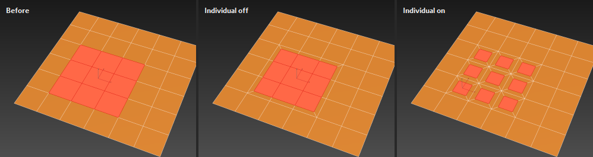
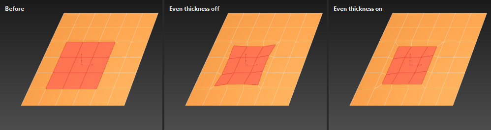
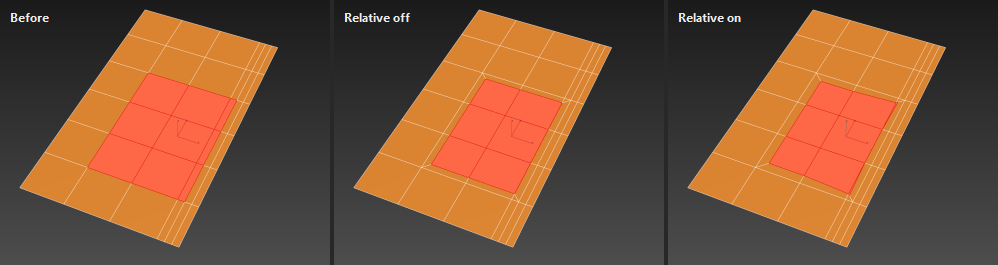
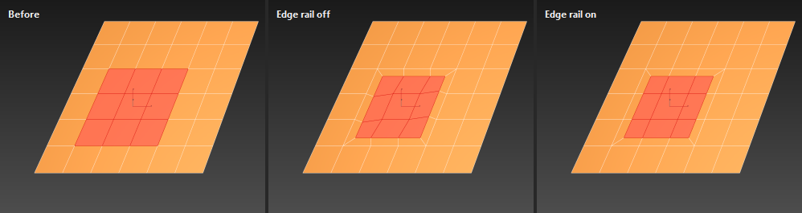
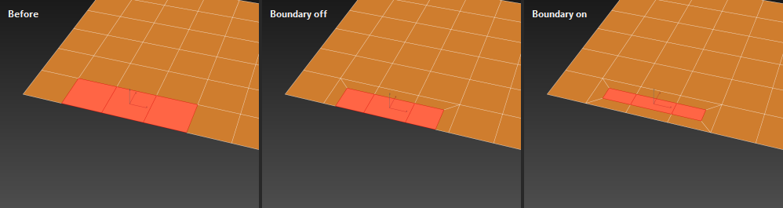
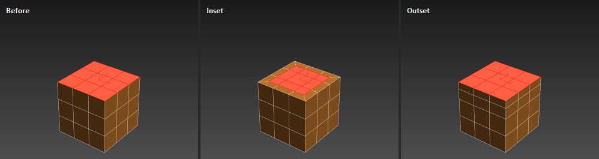
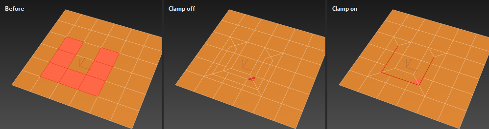
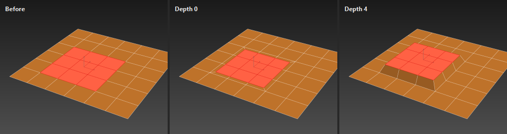

Tools / Inset
Inset
A live inset of the selected polygons. Move the mouse, type a number, press a key.
What it does
Inset 9000 insets the selected polygons and shows the result while you drag. It works on Editable Poly and Edit Poly, at polygon or element level.

Drag the mouse to inset a group of polygons, then press D for depth and O for outset.
How to use it
- Select polygons.
- In the right-click menu, choose Inset 9000 (it sits after Max's Inset). It only shows at polygon and element level.
- Move the mouse toward the middle for a thicker inset, or type a number.
- Click, Enter or Space keeps it. Right-click or Esc cancels.

Options
Each option is a key you can press while the tool is running. The box at the top of the viewport shows which are on.
| Key | Option | What it does |
|---|---|---|
| I | Individual polygons | Insets each polygon on its own instead of the group. |
| E | Even thickness | Keeps the thickness the same all round (on by default). |
| R | Relative to polygon size | Thickness is a share of each polygon's size. |
| L | Edge rail | Slides the new edges along the existing edges. |
| B | Boundary | Moves open (border) edges too (on by default). |
| O | Outset | Grows outward instead of inward. |
| C | Clamp | Stops before the inset folds over itself (on by default). |
| D | Depth (in / out) | Also moves the inset polygons along the normal. |
While dragging: Ctrl sets depth, Shift slows the movement. Middle mouse pans, Alt+middle orbits, the wheel zooms.








Good to know
- It stays fast on big selections: 900 polygons on a 100k-polygon mesh inset in under a second.
- Undo is one step.